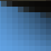
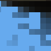

Glossary
A
- Alpha
Refers to transparency. An Alpha Channel allows transparency control. Certain image formats may only contain a single Alpha Channel allowing a transparency of on or off. Other formats allow a variable level of transparency.
- Anti Aliasing
A technique used to make diagonal or curved edges appear smoother by setting pixels near the edge to intermediate colors according to where the edge crosses the underlying color.
B
- Bitmap
" From The Free On-line Dictionary of Computing (13 Mar 01) : bitmap A data file or structure which corresponds bit for bit with an image displayed on a screen, probably in the same format as it would be stored in the display's video memory or maybe as a device independent bitmap. A bitmap is characterised by the width and height of the image in pixels and the number of bits per pixel which determines the number of shades of grey or colours it can represent. A bitmap representing a coloured image (a "pixmap") will usually have pixels with between one and eight bits for each of the red, green, and blue components, though other colour encodings are also used. The green component sometimes has more bits that the other two to cater for the human eye's greater discrimination in this component. "
C
- Channels
Each image is divided up into separate channels and then recombined before being sent to the output device. An output device is most usually a screen. The channels that are used when rendering images to a screen are Red, Green, and Blue. Other output devices may use different channels. Channels can be useful when working on images that need adjustment to one particular color. If, for example, the removal of "red-eye" is the goal, work on the Red channel is most obviously a ready solution. Channels can be seen as masks that allow or restrict the output of the color that the channel represents. By running filters against this channel information, many varied and subtle effects can be put in to play by the experienced GIMP user.
- Clipboard
Clipboard is the term used to describe a temporary area of memory that is used to transfer data between applications or documents. The GIMP uses slightly different clipboard approaches when used under differnt operating systems. Under Linux/XFree, the XFree clipboard is used for text and The GIMP internal image clipboard is used for images that are being transferred between image documents. When The GIMP is used with other operating systems, differences may be apparent. Any differences should be outlined in the operating system specific documentation for the individual GIMP package.
The most fundamental operations provided by a clipboard interface allow for Cut, Copy, and Paste. Cut is used to denote the removal of an item that is sent to the clipboard. Copy leaves the item in the document and copies it to the clipboard. Paste copies to the document whatever happens to be in the clipboard. The GIMP will make an intelligent decision about what to paste depending upon the target. If the target is a canvas, then paste operation will use the image clipboard. If the target is a text entry box, then the paste operation will use the text clipboard.
D
- Dithering
Dithering refers to the math and voodoo involved in rendering an image that has few colors seem like it has many. Dithering is accomplished in different ways depending on the output device and the program. One particularly effective method is clustering pixels of color together in an attempt to simulate another color. This is achieved by the human eye and the tendency for it to mix colors while viewing complex color patterns. A common dithering effect is seen on television screens or in newspaper print. From a distance the images seem to be constructed of many varied colors or shades, but upon closer inspection this is certainly not the case. A color television uses only three colors clustered together in various states of on or off. A black and white newspaper uses only black ink, yet pictures in newspapers appear to be constructed of grey tones. Furthermore, there are techniques used to achieve greater success in dithering. The GIMP can utilize the Floyd-Steinberg dithering technique, for example. This dithering method is simply put, a mathematical way of clustering the pixels to accomplish better results than other dithering methods. Of course, there are always exceptions and there are many different dithering models that are in use today.
F
- File Format
A way that an image is written. You should select a file format which is suitable for your situation. JPEG and PostScript are examples of file formats.
- Filter
See: Plug-In
- FITS
The FITS, or Flexible Image Transport System, was developed by NASA for cross platform transfer of astronomical data. Of note is that not all FITS files contain image data. The format is also used to transport other data such as tables and matrices.
- Floating Selection
Floating selections are similar in function to layers except that floating selections must be anchored before work can resume on any other layers in the image. While a selection is floating, any number of functions can be used to alter the image data contained within the float.
There are two methods available for anchoring a float. The first, and most useful, is to change the float into a new layer. This is achieved by creating a new layer while the float is active. The second method involves anchoring the float to an already existing layer. This is done by clicking anywhere on the image except on the float. Doing so will merge the float with the background layer.
Any pasted selection will be first rendered as a floating selection.
- Floyd-Steinberg Dithering
This method of dithering looks at the current pixel color and retrieving the closest values from the palette. These colors are then distributed to the pixel areas below and to the right of the original pixel.
G
- GNU
GNU's Not Unix, an organization devoted to the creation and support of Open Source software. GIMP is an official GNU application.
- Guides
Guides are a convenient way to help you align layers and tool functions on your drawable image, layer, or selection. Guides are created manually by clicking and dragging from either the top or left rulers in to the image area. They appear as blue dashed lines. They do not print. There are some useful options available to the user to help utilize guides efficiently, such as Snap to Guides , Toggle Guides , and Center Guide .
H
- Hex Triplet
A way of representing color in the form #rrggbb where "rr" represents red, "gg" green, and "bb" blue. Commonly used in web design.
- HSB
See: HSV
- HSL
See: HSV
- HSV
Hue Saturation Value, a way of representing color. The Hue is the color like red or blue, the Saturation is how strong the color is and the Value is the brightness. This is sometimes called HSB or Hue Saturation Brightness.
I
- Image Hose
Image Hoses are special brushes that contain many different frames. An exmaple of this might be a footstep brush that contains two images. One of a left footprint and one of a right footprint. During the application of this hypothetical hose brush, one would see the left footprint followed by that of the right in a continuous fashion. This method of animation for brushes is very powerful.
- Incremental, paint mode
This paint mode renders each brush stroke directly onto the active layer. If incremental mode is not set, there is a canvas buffer that is composited with the active layer.
The two images above were created using a brush with spacing set to sixty. The image on the left shows non-incremental painting and the image on the right shows the difference that incremental painting can produce. Incremental paint mode results in each brush application, through the duration of a stroke, being rendered in addition to any previous brush renderings.
L
- Layers
Layers are an extremely important aspect to many if not all imaging applications and The GIMP is no exception. There is good coverage of layers in the Layers Introduction .
M
- Marching Ants
The name for the dotted line which delineates a selection.
- Modes, layer
There are fifteen available layer modes. Selecting a layer mode changes the way that layer or paint application is viewed based on the layer or layers beneath it.
Layer modes
- Normal
This is the default layer mode. The layer will be viewed normally.
- Dissolve
The Dissolve layer mode dissolves the layer into the layer beneath it. It does so by dispersing pixels. This can best be seen in a close-up screenshot.
 
The image on the left illustrates a normal layer mode and the image on the right shows the same two layers in dissolve mode.
- Multiply
This mode multiplies the pixel values of the layer with those that are visible beneath it.
The image on the left illustrates a normal layer mode and the image on the right shows the same two layers in multiply mode.
- Divide
The image on the left illustrates a normal layer mode and the image on the right shows the same two layers in divide mode.
- Screen

The image on the left illustrates a normal layer mode and the image on the right shows the same two layers in screen mode.
- Overlay
The image on the left illustrates a normal layer mode and the image on the right shows the same two layers in overlay mode.
- Difference
The image on the left illustrates a normal layer mode and the image on the right shows the same two layers in difference mode.
- Addition
The image on the left illustrates a normal layer mode and the image on the right shows the same two layers in addition mode.
- Subtract
The image on the left illustrates a normal layer mode and the image on the right shows the same two layers in subtract mode.
- Darken Only
The image on the left illustrates a normal layer mode and the image on the right shows the same two layers in darken mode.
- Lighten Only
The image on the left illustrates a normal layer mode and the image on the right shows the same two layers in lighten mode.
- Hue
The image on the left illustrates a normal layer mode and the image on the right shows the same two layers in hue mode.
- Saturation
The image on the left illustrates a normal layer mode and the image on the right shows the same two layers in saturation mode.
- Color
The image on the left illustrates a normal layer mode and the image on the right shows the same two layers in color mode.
- Value
The image on the left illustrates a normal layer mode and the image on the right shows the same two layers in value mode.
N
- Named Buffer
A Named Buffer is not unlike a Clipboard except that a Named Buffer is a specific clipboard that can contain a single cut or copy. Each Named Buffer must be named appropriately to ensure that no confusion about the contents of a buffer ensues. Using the interface supplied with the Paste Named command, the user has the opportunity to permanently and irreversably delete any of the listed named buffers.
- Noise
Noise refers to image noise. This is most commonly, a visual representation of audial white noise. A common place that noise is found in visual format is television sets that are not receiving signal. It is considered to be a random collection of pixels of certain colors.
R
- RGBA
RGBA is an acronym for Red Green Blue Alpha. This acronym is used to describe color using four eight bit spaces. Each color represents one channel that contains color amounts from 0 to 255 for each channel. Thus Red:255 and Green:0, Blue:0, Alpha:0, indicates a layer or image that contains only pure red.
S
- Sample Merge
Sample Merging refers to the system of taking sampling information from the sub-pixel layer of the image. Normally all pixel changes are based on a lowest resolution of one pixel. Sub-pixel operations take the information from a layer that has no lowest resolution. It is a mathematical level that uses vectors to describe the operations.
- Script-Fu
A scripting language designed specifically for GIMP.
- Selection
A selection is an area of an image that can contain image modifications to a precise region. A selected area can be modified without affecting other areas of an image.
- Stroke
A function for making a selection, path or channel into a solid line using the paintbrush.
- Swap Directory
An area on your hard disk which effectively extends the amount of main memory available to GIMP meaning larger images or more complex operations can be performed.
T
- Tile Cache
A way that GIMP speeds up image display by keeping the data in memory.
- Tool
A mode for manipulating image functions. Paintbrush and Clone are examples of tools.